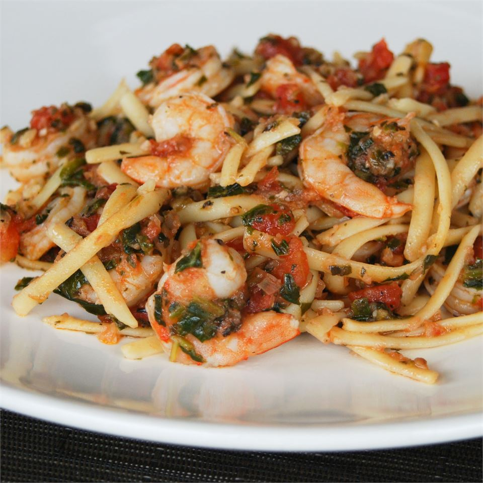

Shrimp Pasta Recipe!
Home

Shrimp Pasta
This shrimp pasta reciepe is better than anything you'll find in the store.
Ingredients:
- 8 ounces dry fettuccine pasta
- 3 cloves garlic
- ½ sweet onion, cut into wedges
- 3 tablespoons fresh oregano leaves
- 4 tablespoons olive oil
- 4 medium tomatoes, chopped
- 3 tablespoons chopped fresh basil
- salt and pepper to taste
- 1 cup spinach leaves
- 1 pound cooked shrimp - peeled and deveined
- 8 ounces fresh mozzarella cheese, diced
Directions:
- Bring a large pot of lightly salted water to a boil. Add the pasta, and cook for 8 minutes, or until tender. Drain.
- In the container of a food processor, combine the garlic, onion and oregano. Pulse until finely chopped. Heat the olive oil in a large skillet over medium heat. Add the onion mixture; cook and stir until fragrant and almost golden. Mix in the tomatoes, basil, salt and pepper. Simmer for about 5 minutes while the pasta is cooking, stirring occasionally.
- Mix in spinach until it wilts, then just before the pasta is done, stir in the shrimp. Cook until heated through. Toss with pasta in a large serving bowl, and mix in mozzarella cheese.